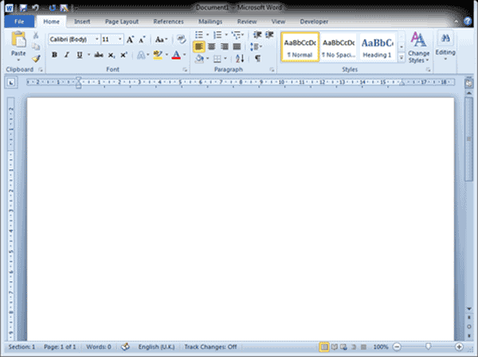
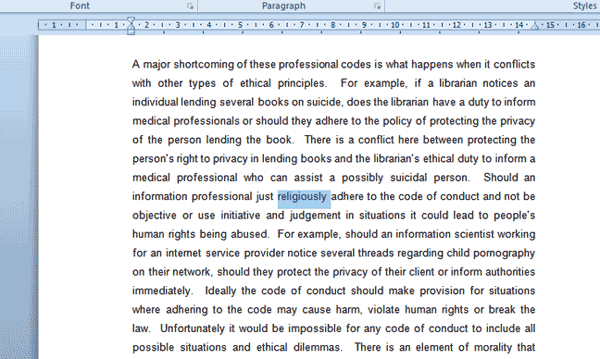
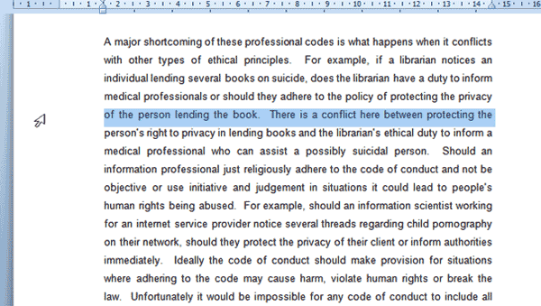

In order to enter the first lines of text, whether it is the award winning novel you are writing, a recipe for chocolate brownies or your letter of resignation to your boss from hell, you have to start with either an existing document or a blank document.
1. When you launch Microsoft Word, a blank document will automatically open. Depending on your computer screen size and your document zoom, it may look like this:

2. The white area that makes up the majority of the screen is a visual representation of a page. To add text to the first page, use your mouse to click on the page and start typing by using your keyboard to add text.
3. You will see a blinking short vertical line on your screen. This indicates where the next letter you type will appear.
4. To insert spaces between words, use the spacebar on your keyboard.
5. To insert a new paragraph, press the Enter key on your keyboard.
6. To add capital letters, hold down the Shift key on your keyboard whilst pressing the letter on your keyboard you wish to capitalize in your text.
7. You may notice that on your keyboard there are keys that have two or more characters on them. To insert the character located at the top of the key, hold down the Shift key whilst pressing the required key.
8. Pressing the Caps Lock key on your keyboard once and then typing will allow you to type in capital letters. To switch Caps Lock off and return to normal case, press the Caps Lock key again (only once).
The fundamentals of selecting text are often overlooked when a user learns Microsoft Word. This frequently leads to less effective use of the program and even frustration. Imagine you learnt how to make chocolate brownies, but you missed the lesson on how to use the mixer. You may still be manually mixing your ingredients whilst there is a more expedient way i.e.: using the mixer. Depending on your baking skills, your brownies will still come out perfect, but I'm sure you agree there is little benefit in mixing batter manually when it can be done quicker!
The ability to quickly select text in Word can make the difference between spending minutes or hours editing text. To select general sections of text, use your mouse by holding down the left mouse button and dragging through the text you wish to select.
1. To select a single word, use your mouse to move the cursor to the word you wish to select.
2. Double-click the word in quick succession using the left mouse button.
3. You will be able to observe the selected word by noting that it is highlighted or shaded in blue. Spot the selected word in the screenshot below:

4. To deselect a selected word, use your mouse to left click anywhere in the document.
5. To select an entire line of text, move your mouse cursor to the left-hand margin of the page next to the line you wish to select. Hover and move your cursor until it changes into a right-pointing arrow.
6. Once your cursor changes to a right-pointing arrow, left-click once to select the entire line of text. Take note of the arrow position and selected text in the screenshot below:

7. You can select multiple adjacent lines after selecting a first line (as above). Hold down your left mouse button whilst dragging your cursor upwards or downwards to select lines.
8. Let go of the left mouse button once you have selected all the relevant lines. They will remain selected until you click in the document.
9. When editing text, it is often necessary to select an entire sentence. To do this, hold down the Ctrl key on your keyboard and click once in the sentence you wish to select.
10. To select a paragraph requires a "trigger-happy" finger as you need to triple click (left-mouse button) in the paragraph you wish to select.
11. To select specific lines/words or paragraphs that are dispersed throughout the document making it impossible to use the drag function described above. To select non-adjacent pieces of text (words, paragraphs or sentences), hold down the Ctrl key on your keyboard whilst making multiple selections.
12. Finally, you may need to select all the text contained in your document when you, for example, want to change the font of all text.
13. To select all, move your cursor to the left-hand side margin area of your document until it changes into a right-pointing arrow (as pictured in screenshot above). Once you see the right-pointing arrow, triple click to select the whole document.